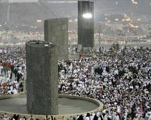

Mecca, to me, is more than just a city; it's the spiritual heart of my existence, a place that resonates deeply within my soul. While my physical home may be elsewhere, Mecca holds a unique and irreplaceable position as a sanctuary, a source of peace, and a profound connection to my faith. It's where the Kaaba stands, a beacon that guides millions in prayer, and where the history of Islam breathes in every corner. The thought of its sacred ground, the devotion of pilgrims, and the spiritual energy that permeates its air all contribute to a feeling of belonging that transcends distance. It's a constant reminder of my purpose and a wellspring of inspiration, truly making it a home for my heart and spirit.

Beyond its role as a spiritual center, Mecca is a place of immense historical significance. It is the birthplace of the Prophet Muhammad (peace be upon him) and the origin of the message of Islam. To walk its streets is to connect with a history that has shaped the lives of billions. Visiting Mecca is a journey back in time, allowing me to reflect on the early days of Islam and feel a deeper connection to its story. The city's rich history reinforces my belief and strengthens my resolve.

What makes Mecca truly special is the overwhelming sense of community. When you are there, you are surrounded by a diverse gathering of people from every corner of the globe, all united by a single purpose. Despite our differences, we are all equal, standing shoulder to shoulder in prayer. This sense of global unity and shared devotion creates an unparalleled feeling of belonging. It is a place where I feel at home, not because of a house or a street, but because of the shared faith and love that unites us all.
